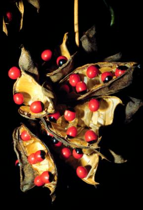
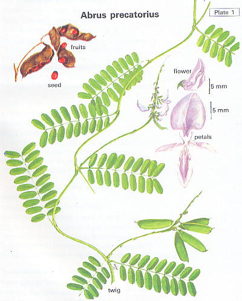

Abrus precatorius
Linn.
Taxonomic Details

----- Correct Name
----- Classification
----- Synonyms
----- Common Names
Other Biological Details
----- Habit and Habitat
----- Diagnostic Features
----- Reproductive Biology
---------- Breeding System
---------- Phenology
---------- Pollinators
---------- Seed Biology
----------Seed Germination
------ Cultivation
----- Major Pests and Diseases
Economic Potential and Uses
----- Parts Used
----- Uses
----- Harvesting Practices
----- Produce and Products
----- Chemistry
----- Processing Techniques
----- Other uses
----- Economic Potential to the
Country
----- Export Potential
Miscellaneous Information
Literature
Taxonomic
Details
Correct Name : Abrus precatorius L.

Family :
Leguminaceae
Subfamily: Faboideae.
Synonyms : Glyceria abrus; Glycine
abrus;
Common Names :
English: Indian liquorice,
Hindi: Chataki, Chirma, Chirmi, Gaungchi, Ghumchi, Ghungchi, Gumchi, Gumja,
Guncaci, Gunchi, Gunc, Gunjika, Gurgunj, Guncha, Rati.
Bengali: Gunch, Kunch, Rati, Ratti, Rosary Pea, Sarmai
Malayalam: Angaravallari, Aruna, Atimadhuram, Kunni, Madhumulla,
Marati: Bhilabhushana, Chanoti, Gunj, Gunja, Kakadani, kakani, Kunch
Tamil: Adingam, Adisaniyai, Crab's eye, Durmogha, Edalagam, Gundu-mani,
Kandam, Kundumani, Kunthumani, Madurangam, Saumya, Shitapaki, Singili
Telugu:Erragurja, Gurija, Guruginja, Gurugunji, Guruvinda, Kanichi, Kukkutamu,
Ghurie-ghinja.
Kannada: Gulgangi, Gulganji, Gulugunji, Sinnsguruginja
Back to Top
Other
Biological Details
HABIT & HABITAT:

It is a deciduous climber with
the main stem up to 5-10 cm long, The plant is common up to 1000 m in the semi-arid
tropical deciduous forests, dry deciduous forests, dry mixed forests, Forests,
Gardens and Roadsides, Hedges and thickets, Hill forests, slopes, Hill slopes,
moist deciduous forest, Open areas, open forest, Open grass land, Plains, Road sides,
shady places and waste land of the country.
BioticZone: Himalaya, Konkan plain, Plains, Tropics, West Coast, Western Ghats,
Soil: The plant comes up well in clay loam soil.
Availability :
Misc: Alibag fort, Angidiv, Hillock area, Baghnadi, Bamoti, Bandari Reserve Forest,
Bardez, Betim, Bhadavad, Bordabri, Brahmapuri village near Vela Goa, Canacona,
Changarakode, Nilambur. Changlare, Chapheli, Chikballapur-Bagepalli Road, Chimbel
reservoir to Brahmapuri temple, Chispana, Coileque area, Dasgaon, Deodongra, Deogiri
Reserve Forest, devichi, Diguvametta, Doasa, Dolara forest, Gariaband, Gaucher,
harkool, Ilhas, Kamarakaval StateForest, Kankvali, Karanja, Karla, Konkan ,
Kudal, Mahaballeshwar, Mahad, Mahanandi, Marmugoa, Mount Abu, Nagarahole,
Narnalafort, Neral, Nimbibeed, Onda, Paidoddii Reserve Forest, Paloda, Panaji,
Parsolia, Pat-Netraveli, Peapaly, phondaghat, Pocharam, Poinguinim, Saily,
Salempur, Salkumar, Satari, Shahabad, Siddarbetta State Forest, Singhpur, Songir,
Tannepada-Kharshet, Tantpur, Taurenga, Tiger falls, Toda rai singh, Toda Rai Singh
R.F, Trombay, Tropical regions,
Tudal village forest, Umbarthan, Vagiri, Vengurla, Vishnunandi, and Warshi.
Country: India, Malayasia, Sri Lanka and Tropical Countries.
Zone: Central, East, North, North East, South and West zones.
State: Andhra Pradesh, Arunachal Pradesh, Bihar, Goa Daman Diu, Gujarat, Himachal
Pradesh, Karnataka, Kerala, Madhya Pradesh, Maharashtra, Rajasthan, Tamil Nadu,
Uttar Pradesh and West Bengal,
District:Agra, Akola, Balaghat, Bangalore, Banswara, Bastar, Bellary, Bhopal,
Bidar, Bilaspur, Chamoli, Champaran, Chandrapur, Chikmaglore, Chitradurga, Dadra,
Dakshin Kannada, Daman, Damoh, Dharmapuri, Hassan, Hoshangabad, Indore, Jabalpur,
Jaipur, Kodagu, Kolar, Kota, Kullu, Kurnool, Malappuram, Mandla, Mandya, Medak,
Mysore, Nasik, Nimar West, Panna, Pune, Raichur, Raigad, Raigarh, Raipur, Raisen,
Rajnandgaon, Rewa, Sagar, Salem, Satara, Satna, Seoni, Shahdol, Shimoga,
Shivpuri, Sidhi, Sindhudurg, Sirohi, South Arcot, Surguja, Tirap, Tiruchi,
Tirunelveli, Tonk, Tumkur, Uttar Kannada and Yawatmal.
Taluk: Abu road, Dhone, Kankavli, Kudal, Pachmarhi, Sawantwadi and Tenkasi.
Status :
Back to Top
DIAGNOSTIC FEATURES
It is a deciduous climber with the main stem up to 5-10 cm long; leaves compound,
paripinnate, leaflets in 10-20 pairs, opposite, 7 mm long and 4 - 6 mm broad.
Flowers are 1 -1.5 cm long, pink peduncled in 5-10 cm long raceme. Pods are 2.5
- 4.5 cm long and 1-1.25 cm broad, pubescent; the beak of the pod is sharply
deflexed. In the different forms, the seeds may be black, white, half black
and half scarlet in colour, shining. The plant is common up to 1000 m in the
semi-arid, tropical and dry deciduous areas of the country.
Back to Top
REPRODUCTIVE BIOLOGY
Breeding System :
Phenology :
Flowering occurs during May-October as
well as during August - March.
Pollinators:
Seed Biology :
Seed Germination:
Cultivation:
Back to Top
MAJOR PESTS & DISEASES
Pests:
Diseases:
Back to Top
Economic
Potential and Uses
Parts used:
Roots,
Leaves and Seeds.
Uses:
1. The fruit is used as a tonic to the brain.
Harvesting
Practices
Produce and Products
Back to Top
Chemistry:
The seeds of
Abrus precatorius contain a toxic protein, a lipid and saponins. The highly toxic protein named abrin has been purified and crystallized in yield
of 0.12% and studied. Abrin has a molecular weight of ~ 260,000 containing
four identical or very similar subunits of molecular weight ~ 65,000 and each
subunit is composed of two distinct polypeptide chains of molecular weights 35,000
and 30,000 each. The polypeptide chains also contain a carbohydrate residue. The
crystal structure of abrin has been determined. The polysaccharides of A predator/us consists of sugar units which have been identified
as D-galacturonic acid, D-galactose, L-arabinose, L-mamnose-and D-xylose.
Methylester of tryptophane and the alkaloids pictorine (choline), and trigonelline
have also been identified. The red colouring matter of the seeds has been
identified as the flavonoids abrectorin (6,4'-di-methoxy-7, 3'-dihydroxy flavone),
and demethoxycentaureidin-7-O-ruti- noside.
The roots and the vines of the plant contain at
least six saponins. One of the sapogenins has been identified as oleanolic acid.
Glycyrrhizin has been identified in the vine and the root. 5-A-Cholanic acid
has also been isolated from the seeds. Saponins containing oleanolic acid
moiety have been recognized to have strong pharmacological activity.
Back to Top
Processing Techniques
Back to Top
Other Uses :
- Both the roots and
leaves are sweetish in taste resembling glycyrrhiza, and are used against cough
and cold.
- The seed paste is used as an anti-inflammatory agent and applied externally,
while combined with Plumbago zeylanica root (Chitrak), it is used for dressing
leprosy wounds. Abrus pre catorius root, black sulfide of mercury, fruit of
Azadirachta indica (Neem), Cannabissativa and Croton tiglium seeds are
ground together in lime juice to form a paste and taken internally against paralysis.
In the Unani system, the seeds are considered an abortifacient. The common Ayurvedic
preparations are "Gunja Bhadra Ras", "Gunja Taila" and "Gunjadilepa".
- BIOLOGICAL ACTIVITY
A concoction of indigenous drug acted as a long acting contraceptive by inhibiting
endometrial alkaline phosphatase and hence preventing implantation of the fertilized
ovum. Abrus precatorius agglutinin inhibited the growth of Yoshida
sarcoma cells. The cytotoxicity of phytoagglutinin may be related to the binding
specificity of the agglutinin to the sugar chains on the cell surface. Abrin
has been reported to inhibit protein synthesis. The two peptide chains have
been studied for their biological function. Abrin has shown abortifacient activity.
Economical
Potential to the country
Back to Top
Export Potential
Back to Top
Miscellaneous
Information
Back to Top
Literature
-
Akhtar, N., Haran, S.S. and Mahbooddin. Polysaccharide
components of Abrus precato- rius. Sci. Ind. (Karachi), 1972, 9, 304; Chem.
Abstr.. 1974, 81, 101858p.
Bhardwaj, O.K., Bisht, M.S. and Mehta, C.K.
Flavonoids from Abrus precatorius. Phytochemistry, 1980,19, 2040.
Das.P.C. Oral contraceptive. Brit. Patent. 1445599 (11 Aug. 1976); Chem Abstr
1977 86,21786b.
Ghosal, S. and Dutta; S.K. Alkaloids of Abrus
precatorius. Phytochemistry,
1971,10,195.
Hson Mori Chang, Ten Chang Chiang and Tohimas,
C.W. Mak. Isolation and structure elucida- tion of abruslactone A, a new oleanane
type terpene from the roots and vines of Abrus precato-rius. J. chem. Soc.,
Chem. Commun., 1982,1197
Kothari M. J.& Moorthy S.Flora of Raigad district
.
Li Jung Yin, Lei-Lucy and Tungta-Cheng. Purification
of abrin from Abrus precatorius. Chem. Abstr., 1970, 72, 98695q.
McPherson, A.Jr. and Rich,A. Crystalline abrin;
X-ray diffraction data, molecularweight, carbohydrate conient and subunit structure.
Fobs. Lett., 1973, 35, 257.
Mandava, N., Anderson, J.D., Dulky, S.R. and
Thomson, M.J. Novel occurrence of 5-p-cholanic acid in plants. Isolation from
sequirity beans (Abrus precatorius) steroids
Maiti, P.O., Mukherjea.S. and Chatterjee.A. Chemical examination of seeds
of Abrus precatorius. J. Indian Acad. Forensic Sci., 1970, 9, 64.
Malhotra S.K.& Moorthy S.
Flora of Taroba National Park.
Olsnes. S. and Pipil. S. Isolation and properties
of abrin: a cytotoxic protein, inhibiting protein synthesis. Evidence for different
biological functions of its two constituent peptide chains. Eur. J. Biochem..
1973, 35, 179; Chem. Abstr., 1973, 79, 62371m.
Sasya Sahyadri- A CD on
Plants of Western Ghats, 2003, K.N. Ganeshaiah.
Back to Top